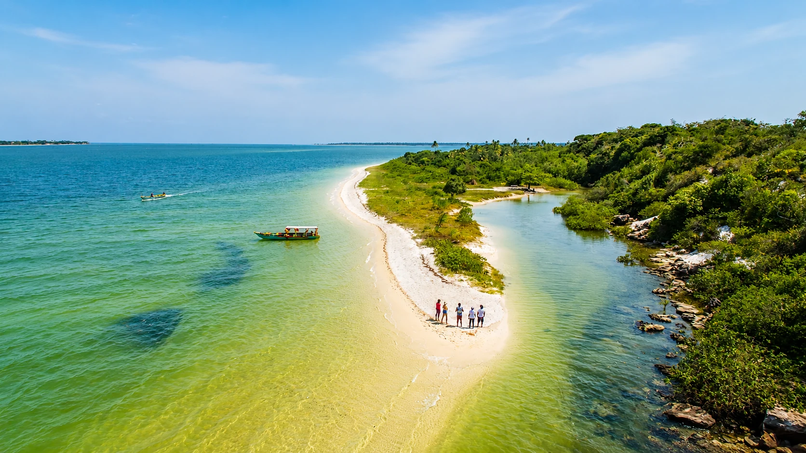
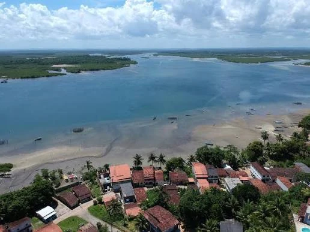

Contracosta de Vera Cruz
Jiribatuba
Águas tranquilas, manguezais, fé antiga e um nome indígena que ainda guarda o voo das aves na paisagem.
Uma comunidade voltada para águas interiores
01
02
03
Jiribatuba se revela devagar, no ritmo da maré
Localizada no município de Vera Cruz, Jiribatuba integra a contracosta da Ilha de Itaparica. A paisagem reúne águas calmas, praias, manguezais, pequenas embarcações, áreas verdes e caminhos ligados à vida comunitária.
A história do lugar também passa pela antiga devoção a Santo Amaro, pela arquitetura religiosa, pelas relações com Jaguaripe e pelas memórias de pescadores, marisqueiras, famílias e moradores.
Território das águasMaré, manguezal, praia e rotas de embarcação.
Patrimônio religiosoIgreja histórica, festa do padroeiro e memória comunitária.
Herança indígenaO nome preserva elementos da língua tupi na geografia da ilha.

A maré redesenha as margens
Áreas rasas, lama, areia e canais mudam de aparência ao longo do dia.
A igreja guarda séculos
Arquitetura, devoção e transformações históricas permanecem no alto do morro.
A memória completa os documentos
Lendas, nomes de lugares e histórias familiares ampliam a leitura da comunidade.
Por que o nome Jiribatuba?
A origem exata nem sempre aparece da mesma forma nas fontes, mas uma interpretação acadêmica permite compreender a estrutura do nome.
Jiriba + tuba
Um estudo sobre topônimos da Ilha de Itaparica relaciona jiriba ou giruba a uma variação de um termo tupi usado para uma ave de plumagem colorida.
O elemento -tuba indica abundância. Assim, Jiribatuba pode ser interpretada como “lugar onde há muitas jiribas” ou “terra de muitas aves coloridas”.
Jiriba ou giruba+-tuba→Muitas jiribas
O que é possível afirmar?
Diferentes páginas apenas informam que o nome tem origem tupi-guarani, sem apresentar tradução detalhada.
Por isso, a interpretação ligada às aves deve ser apresentada como hipótese etimológica apoiada por estudo toponímico, não como certeza absoluta.
Do Santo Amaro do Catu a Jiribatuba
Uma história ligada à fé, ao morro e às águas
Em registros históricos, a localidade aparece associada ao nome Santo Amaro do Catu, uma antiga referência religiosa e territorial.
Fontes patrimoniais situam a igreja no alto de um morro e indicam que sua construção possui características do final do século XVII. A posição elevada permitia observar a entrada da baía e as paisagens da contracosta.
Ao longo do tempo, o lugar passou por mudanças administrativas, religiosas e arquitetônicas. Jiribatuba tornou-se um dos distritos que participaram da formação do município de Vera Cruz em 1962.
Território indígena
Povos originários conheciam e ocupavam as águas, matas e caminhos da ilha.
Construção da igreja
Características arquitetônicas apontam para uma edificação desse período.
Relação com Jaguaripe
Fonte patrimonial registra que o vigário teria sido designado para a paróquia de Jaguaripe.
Transformações arquitetônicas
A torre, o frontão e outros elementos passaram por alterações.
Formação de Vera Cruz
Jiribatuba integrou o novo município ao lado de outros distritos da ilha.
Comunidade viva
Fé, pesca, paisagem e memória continuam organizando o pertencimento local.
Igreja Matriz de Santo Amaro do Catu
A igreja é um dos principais marcos históricos de Jiribatuba e reúne arquitetura colonial, devoção e paisagem.
XVII
Alto do morroImplantação ligada à paisagem e à visibilidade da baía.
Cantaria antigaPeças de pedra preservam características do século XVII.
Torre transformadaAlterações do século XIX modificaram a aparência da fachada.
Altar neoclássicoO interior reúne elementos de diferentes períodos.
Arquitetura que atravessou transformações
O projeto patrimonial HPIP descreve uma planta relacionada à tradição jesuítica luso-brasileira, acesso externo ao púlpito e elementos de cantaria que ajudam a situar a construção no final do século XVII.
No século XIX, a antiga parede sineira foi modificada, originando a torre esbelta. Também foram acrescentados o frontão em volutas e outros elementos. No interior, destaca-se um altar-mor neoclássico.
Memória oral e devoção
A imagem que voltava para a cajazeira
A tradição local repete uma lenda comum à fundação de antigas igrejas: o santo teria indicado o lugar onde desejava permanecer.
Segundo o relato, crianças encontraram uma imagem sob uma cajazeira. Quando ela foi levada para o povoado, teria retornado durante a noite ao ponto onde fora descoberta.
A repetição do acontecimento teria sido entendida como um sinal, levando a comunidade a construir a igreja naquele lugar.
A imagem podia ser carregada pelas mãos, mas a tradição dizia que o seu lugar já havia sido escolhido.
Praia, canais e manguezais
A contracosta apresenta águas mais abrigadas, áreas rasas, margens de mangue e espaços usados por pescadores e pequenas embarcações.
O cenário também é lugar de trabalho
Em Jiribatuba, praias e margens não são apenas espaços de lazer. Elas podem funcionar como áreas de embarque, pesca, circulação e preparação de equipamentos.
Os manguezais protegem as margens e oferecem abrigo e alimento para diferentes espécies. Preservá-los também significa proteger a pesca, a mariscagem e os saberes ligados às águas.
Detalhes que ampliam a história
Alguns fatos ajudam a enxergar a comunidade para além da praia e da paisagem religiosa.
É distrito de Vera Cruz
Jiribatuba integrou a formação administrativa do município em 1962.
O nome preserva o tupi
O topônimo pode indicar um lugar com abundância de aves chamadas jiribas.
A igreja está no alto
Sua implantação oferece uma leitura ampla da paisagem da entrada da baía.
Santo Amaro é celebrado em janeiro
O dia do padroeiro informado pela Arquidiocese é 15 de janeiro.
A lenda envolve uma cajazeira
A imagem do santo teria retornado ao local onde crianças a encontraram.
As águas são parte do cotidiano
Pesca, embarcações e manguezais ajudam a formar a identidade local.
Jiribatuba também dá nome a um campo terrestre de petróleo
Um plano da Agência Nacional do Petróleo registra o Campo de Jiribatuba na Bacia de Camamu, na porção sudeste da Ilha de Itaparica. O nome da comunidade também aparece na geologia e na história econômica da região.
Conecta Vera Cruz · Memória coletiva
Vozes de Jiribatuba
Você conhece outra lenda, um antigo nome de lugar, uma festa, receita ou história de Jiribatuba? Compartilhe sua lembrança com a comunidade.
Compartilhe uma memória
Conte algo que você viveu, ouviu de moradores antigos ou considera importante preservar.
Evite divulgar telefone, endereço ou outros dados pessoais.
Memórias da comunidade
0 publicações
Histórias compartilhadas
Fontes e leitura crítica
De onde vêm as informações?
História, arquitetura e lenda associada à Igreja Matriz de Santo Amaro do Catu.
Informações atuais sobre a Paróquia Santo Amaro, sua criação oficial e o dia do padroeiro.
Interpretação do nome Jiribatuba a partir de elementos da língua tupi.
Referência à participação de Jiribatuba na formação administrativa do município em 1962.
Plano de desenvolvimento do Campo de Jiribatuba, localizado na Bacia de Camamu.
Registros da igreja, da praia, da faixa de areia e da paisagem de águas rasas fornecidos para o projeto.